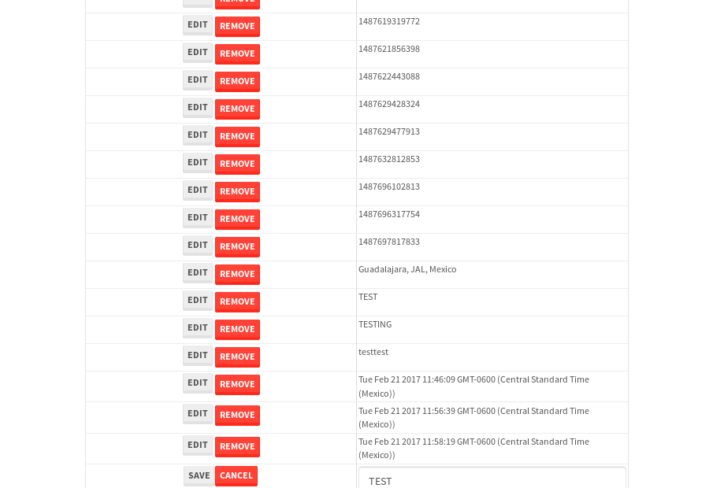

tbColumn.Grid Sorting - 27.586sTests: 5Skipped: 0Failures: 0 should sort data in ascending order then on descending order when sorting by Order Id column - 5.395sTests passed: 100.00%should order data in ascending order when click-sorting an unsorted text column - 4.935sTests passed: 100.00%should order data in descending order when click-sorting an ascending-sorted text column - 5.501sTests passed: 100.00%should order data in ascending order when click-sorting an unsorted date column - 5.205sTests passed: 100.00%should order data in descending order when click-sorting twice an unsorted date column - 6.548sTests passed: 100.00%
tbSingleForm.Form validations - 2.202sTests: 2Skipped: 0Failures: 0 should have an empty required field - 1.216sTests passed: 100.00%should not be able to click on save - 0.986sTests passed: 100.00%
Tubular Filters.tbColumnFilter - 111.814sTests: 12Skipped: 0Failures: 0 should cancel filtering when clicking outside filter-popover - 9.749sTests passed: 100.00%should disable Value text-input for "None" filter - 6.817sTests passed: 100.00%should disable apply button for "None" filter - 7.052sTests passed: 100.00%should decorate popover button when showing data is being filtered for its column - 12.457sTests passed: 100.00%should correctly filter data for the "Equals" filtering option - 8.692sTests passed: 100.00%should correctly filter data for the "Not Equals" filtering option - 8.417sTests passed: 100.00%should correctly filter data for the "Contains" filtering option - 9.041sTests passed: 100.00%should correctly filter data for the "Not Contains" filtering option - 9.212sTests passed: 100.00%should correctly filter data for the "Starts With" filtering option - 7.541sTests passed: 100.00%should correctly filter data for the "Not Starts With" filtering option - 7.216sTests passed: 100.00%should correctly filter data for the "Ends With" filtering option - 7.008sTests passed: 100.00%should correctly filter data for the "Not Ends With" filtering option - 7.438sTests passed: 100.00%
Tubular Filters.tbColumnDateTimeFilter - 138.319sTests: 12Skipped: 0Failures: 0 should cancel filtering when clicking outside filter-popover - 7.417sTests passed: 100.00%should disable Value text-input for "None" filter - 7.116sTests passed: 100.00%should disable apply button for "None" filter - 7.151sTests passed: 100.00%should clear filtering when clicking on Clean button - 17.687sTests passed: 100.00%should decorate popover button when showing data is being filtered for its column - 11.856sTests passed: 100.00%should correctly filter data for the "Equals" filtering option - 7.417sTests passed: 100.00%should correctly filter data for the "Not Equals" filtering option - 7.735sTests passed: 100.00%should correctly filter data for the "Between" filtering option - 12.987sTests passed: 100.00%should correctly filter data for the "Greater-or-equal" filtering option - 12.295sTests passed: 100.00%should corretlly filter data for the "Greater" filtering option - 12.029sTests passed: 100.00%should correctly filter data for the "Less-or-equal" filtering option - 11.987sTests passed: 100.00%should correctly filter data for the "Less" filtering option - 11.583sTests passed: 100.00%
Tubular Filters.tbColumnOptionsFilter - 80.967sTests: 3Skipped: 0Failures: 0 should cancel filtering when clicking outside filter-popover - 9.46sTests passed: 100.00%should decorate popover button when showing data is being filtered for its column - 11.818sTests passed: 100.00%should filter column-elements in accordance to the selected filter when selecting a single option - 48.524sTests passed: 100.00%
Tubular Filters.tbTextSearch - 49.259sTests: 5Skipped: 0Failures: 0 min-chars is not set - 1.158sTests passed: 100.00%should filter data in searchable-column customer name to matching inputted text, starting from 3 characters - 6.827sTests passed: 100.00%should filter data in searchable-column shipper city to matching inputted text, starting from 3 characters - 12.069sTests passed: 100.00%should show clear button when there is inputted text only - 7.334sTests passed: 100.00%should clear filtering when clicking clear button - 16.387sTests passed: 100.00%
tbForm related components.tbCheckboxField - 6.381sTests: 2Skipped: 0Failures: 0 should save changes on "SAVE" - 2.815sTests passed: 100.00%should discard changes on "CANCEL" - 1.686sTests passed: 100.00%
tbForm related components.tbDropDownEditor - 10.918sTests: 5Skipped: 0Failures: 0 should set initial input value to the value of "value" attribute when defined - 1.995sTests passed: 100.00%should show the component name value in a label field when "showLabel" attribute is true - 1.571sTests passed: 100.00%should show a help field equal to this attribute, is present - 1.75sTests passed: 100.00%should submit modifications to item/server when clicking form "Save" - 2.891sTests passed: 100.00%should NOT submit modifications to item/server when clicking form "Cancel" - 2.258sTests passed: 100.00%
tbForm related components.tbTextArea - 17.018sTests: 7Skipped: 0Failures: 0 should set initial input value to the value of "value" attribute when defined - 1.657sTests passed: 100.00%should be invalidated when the number of chars is not in the range of "min" and "max" attributes - 2.014sTests passed: 100.00%should show the component name value in a label field when "showLabel" attribute is true - 2.003sTests passed: 100.00%should show a help field equal to this attribute, is present - 2.074sTests passed: 100.00%should require the field when the attribute "required" is true - 1.803sTests passed: 100.00%should submit modifications to item/server when clicking form "Save" - 4.433sTests passed: 100.00%should NOT submit modifications to item/server when clicking form "Cancel" - 2.305sTests passed: 100.00%
tbForm related components.tbDateEditor - 13.076sTests: 6Skipped: 0Failures: 0 should set initial date value to the value of "value" attribute when defined - 1.612sTests passed: 100.00%should be invalidated when the date is not in the range of "min" and "max" attributes - 2.135sTests passed: 100.00%should show the component name value in a label field when "showLabel" attribute is true - 1.625sTests passed: 100.00%should show a help field equal to this attribute, is present - 1.526sTests passed: 100.00%should submit modifications to item/server when clicking form "Save" - 2.475sTests passed: 100.00%should NOT submit modifications to item/server when clicking form "Cancel" - 2.379sTests passed: 100.00%
tbForm related components.tbTypeaheadEditor - 16.559sTests: 7Skipped: 0Failures: 0 should show an options list when there is an API-info/component entered-data - 2.695sTests passed: 100.00%should select the option clicked - 2.012sTests passed: 100.00%should show a "delete" button when an option/match is selected, and delete the option if button is clicked - 2.404sTests passed: 100.00%should show a label value equal to the component name when "showLabel" attribue is true - 1.647sTests passed: 100.00%should require a value when "require" attribute is true - 2.314sTests passed: 100.00%should submit modifications to item/server when clicking form "Save" - 3.264sTests passed: 100.00%should NOT submit modifications to item/server when clicking form "Cancel" - 1.678sTests passed: 100.00%
tbForm related components.tbSimpleEditor - 20.42sTests: 9Skipped: 0Failures: 0 should set initial input value to the value of "value" attribute when defined - 1.841sTests passed: 100.00%should be invalidated when the number of chars is not in the range of "min" and "max" attributes - 2.193sTests passed: 100.00%should show the component name value in a label field when "showLabel" attribute is true - 2.975sTests passed: 100.00%should set input placeholder to the value of "placeholder" attribute - 2.434sTests passed: 100.00%should validate the control using the "regex" attribute, if present - 1.717sTests passed: 100.00%should show a help field equal to this attribute, is present - 1.599sTests passed: 100.00%should require the field when the attribute "required" is true - 1.888sTests passed: 100.00%should submit modifications to item/server when clicking form "Save" - 3.093sTests passed: 100.00%should NOT submit modifications to item/server when clicking form "Cancel" - 2.172sTests passed: 100.00%
tbForm related components.tbNumericEditor - 15.993sTests: 7Skipped: 0Failures: 0 should set initial component value to the value of "value" attribute when defined - 1.546sTests passed: 100.00%should be invalidated when the entered number is not in the range of "min" and "max" attributes - 2.664sTests passed: 100.00%should show the component name value in a label field when "showLabel" attribute is true - 1.722sTests passed: 100.00%should show a help field equal to this attribute, is present - 2.257sTests passed: 100.00%should require the field when the attribute "required" is true - 2.01sTests passed: 100.00%should submit modifications to item/server when clicking form "Save" - 3.038sTests passed: 100.00%should NOT submit modifications to item/server when clicking form "Cancel" - 2.191sTests passed: 100.00%
tbForm Connection Error NoModelKey - 2.624sTests: 1Skipped: 0Failures: 0 tbForm connection error functionality - 0.469sTests passed: 100.00%
tbForm Connection Error NoServerUrl - 2.671sTests: 1Skipped: 0Failures: 0 tbForm connection error functionality - 0.476sTests passed: 100.00%
tbGridComponents - 48.407sTests: 6Skipped: 0Failures: 2 should add item with newRow method - 4.199sTests passed: 100.00%should add item with newRow method and cancel action - 1.238sTests passed: 100.00%should update item with tbSaveButton - 19.074sExpected '' to be 'TEST'.✗Tests passed: 0.00%should NOT update item on cancel Update action - 0.772sFailed: ElementNotVisibleError✗Tests passed: 0.00%should remove item with tbRemoveButton - 20.906sTests passed: 100.00%should NOT remove item on cancel Remove action - 0.863sTests passed: 100.00%
tbGridPager.navigation buttons - 9.811sTests: 1Skipped: 0Failures: 0 should perform no action when clicking on the numbered navigation button corresponding to the current-showing results page - 1.312sTests passed: 100.00%
tbGridPager.navigation buttons.first/non-last results page related functionallity - 4.547sTests: 2Skipped: 0Failures: 0 should disable "first" and "previous" navigation buttons when in first results page - 1.756sTests passed: 100.00%should enable "last" and "next" navigation buttons when in a results page other than last - 2.79sTests passed: 100.00%
tbGridPager.navigation buttons.last/non-first results page related functionallity - 3.95sTests: 2Skipped: 0Failures: 0 should disable "last" and "next" navigation buttons when in last results page - 1.828sTests passed: 100.00%should enable "first" and "previous" navigation buttons when in a results page other than first - 2.122sTests passed: 100.00%
tbGridPager.page navigation - 8.246sTests: 5Skipped: 0Failures: 0 should go to next results page when clicking on next navigation button - 2.26sTests passed: 100.00%should go to previous results page when clicking on previous navigation button - 1.415sTests passed: 100.00%should go to last results page when clicking on last navigation button - 1.141sTests passed: 100.00%should go to first results page when clicking on first navigation button - 1.465sTests passed: 100.00%should go to corresponding results page when clicking on a numbered navigation button - 1.965sTests passed: 100.00%
tbGridPagerInfo - 4.304sTests: 2Skipped: 0Failures: 0 should show text in accordance to numbered of filter rows and current results-page - 1.338sTests passed: 100.00%should show count in footer - 0.533sTests passed: 100.00%
tbHttp - 17.921sTests: 8Skipped: 1Failures: 0 should be authenticated - 3.443sTests passed: 100.00%retrieve data - 2.574sTests passed: 100.00%should not login bad credentials - 2.36sTests passed: 100.00%should have a refresh token - 2.543sTests passed: 100.00%should remove authentication - 2.255sTests passed: 100.00%get method-Is not authenticated - 2.335sTests passed: 100.00%post method-Is not authenticated - 2.411sTests passed: 100.00%should regenerate access token on post - 0s***Skipped***Tests passed: 0%
tbPageSizeSelctor - 9.705sTests: 4Skipped: 0Failures: 0 should filter up to 10 data rows per page when selecting a page size of "10" - 2.235sTests passed: 100.00%should filter up to 20 data rows per page when selecting a page size of "20" - 1.693sTests passed: 100.00%should filter up to 50 data rows per page when selecting a page size of "50" - 2.273sTests passed: 100.00%should filter up to 100 data rows per page when selecting a page size of "100" - 1.998sTests passed: 100.00%
tbRowSelectable - 9.528sTests: 2Skipped: 0Failures: 0 selected rows - 5.158sTests passed: 100.00%unselected rows - 2.758sTests passed: 100.00%
tbSingleForm - 18.482sTests: 8Skipped: 1Failures: 0 should load correct info - 0s***Skipped***Tests passed: 0%should change customer name - 2.57sTests passed: 100.00%should save it - 3.072sTests passed: 100.00%should clear the inputs - 2.711sTests passed: 100.00%should update - 2.884sTests passed: 100.00%should reset editor - 2.357sTests passed: 100.00%should not save if not Changes - 2.614sTests passed: 100.00%should not be able to click on save - 2.273sTests passed: 100.00%

{kind=link}